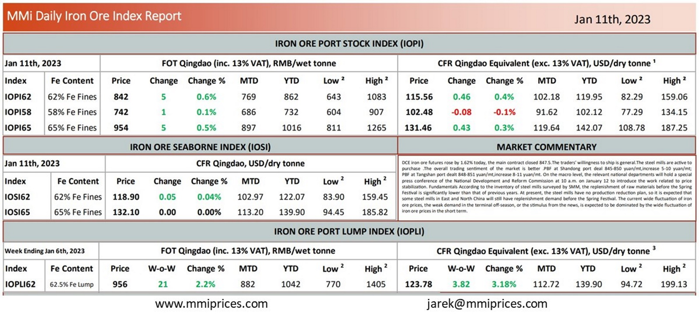

DCE iron ore futures rose by 1.62% today, the main contract closed 847.5. The traders’ willingness to ship is general.The steel mills are active to purchase .The overall trading sentiment of the market is better .PBF at Shandong port deal 845-850 yuan/mt,increase 5-10 yuan/mt; PBF at Tangshan port dealt 848-851 yuan/mt,increase 8-11 yuan/mt. On the macro level, the relevant national departments will hold a special press conference of the National Development and Reform Commission at 10 a.m. on January 12 to introduce the work related to price stabilization. Fundamentals According to the inventory of steel mills surveyed by SMM, the replenishment of raw materials before the Spring Festival is significantly lower than that of previous years. At present, the steel mills have no production reduction plan, so it is expected that some steel mills in East and North China will still have replenishment demand before the Spring Festival. The current wide fluctuation of iron ore prices, the weak demand in the terminal off-season, or the stimulus from the news, is expected to be dominated by the wide fluctuation of iron ore prices in the short term.

Download PDFSource: Metals Market Index (MMi)
Powered byTranslate